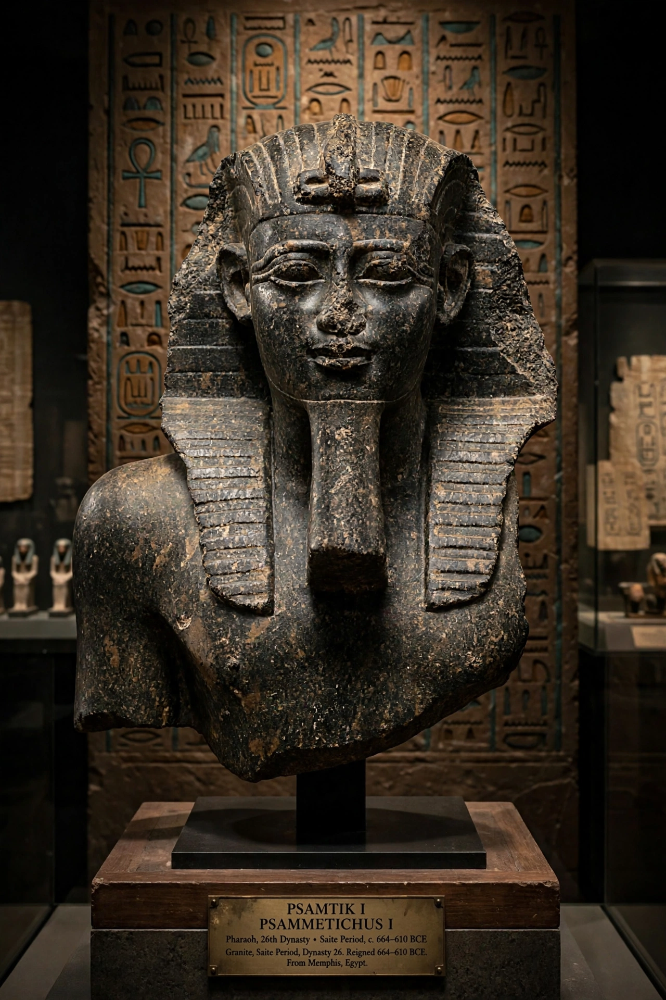

Psamtik I (Egyptian: Wꜣḥ-jb-Rꜥ Psmṯk), also known as Psammetichus, was the first ruler of the Twenty-sixth Dynasty of Egypt, the Saite period, reigning from 664 to 610 BC. He reunified Egypt after the era of Kushite and Assyrian domination.
Son of Necho I, a local ruler of Sais killed in the Kushite conflict, Psamtik was initially installed under Assyrian oversight. With the help of Greek and Carian mercenaries — Herodotus recounts the oracle of "brazen men from the sea" — he expelled rivals and by about 656 BC controlled all Egypt, installing his daughter Nitocris as God's Wife of Amun at Thebes to bind the south.
His long reign revived Egyptian art, administration and trade in an archaic style looking back to the Old and Middle Kingdoms. He encouraged Greek commerce at Naucratis, campaigned in the Levant, and maintained independence as Assyria collapsed. Herodotus also tells the (likely apocryphal) story that Psamtik isolated children to discover the world's first language.